CRIPTON · CONTROL DE MARCA v1.0
Abrir al 100 % de zoom. Los tamaños visibles indicados excluyen el espacio de protección; los archivos ya incluyen ese margen. Esta galería es un control técnico, no una pantalla del POS.
Mínimo de arte visible propuesto: 240 px. Ancho del archivo: 259.64 px.
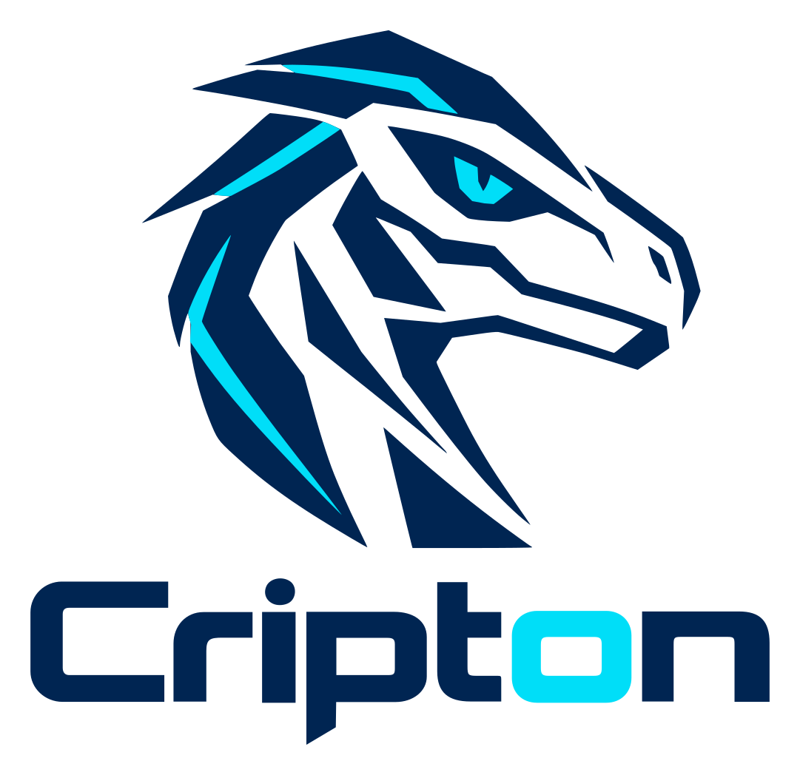
Mínimo de arte visible propuesto: 280 px. Ancho del archivo: 295.97 px.
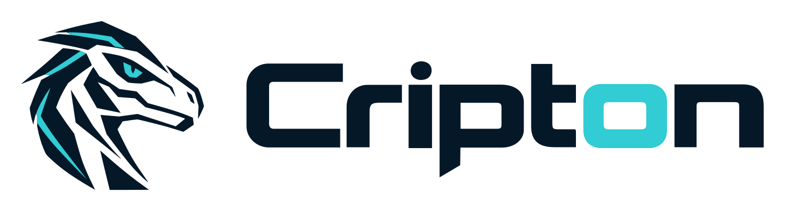
Mínimo de arte visible propuesto: 120 px. Ancho del archivo: 129.82 px.
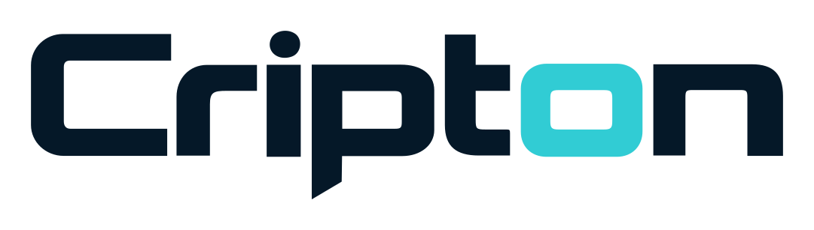
Mínimo de arte visible propuesto: 64 px. Ancho del archivo: 80.00 px.
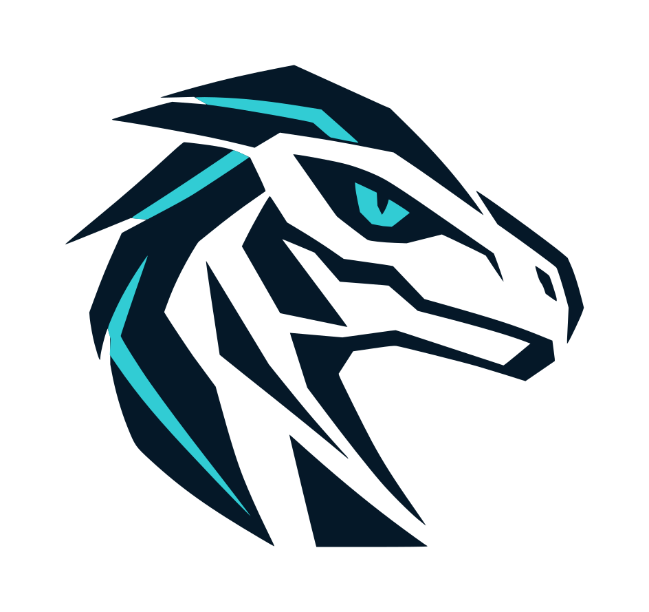
Los tamaños menores a 64 px visibles son pruebas de rechazo, no versiones autorizadas para el raptor detallado.
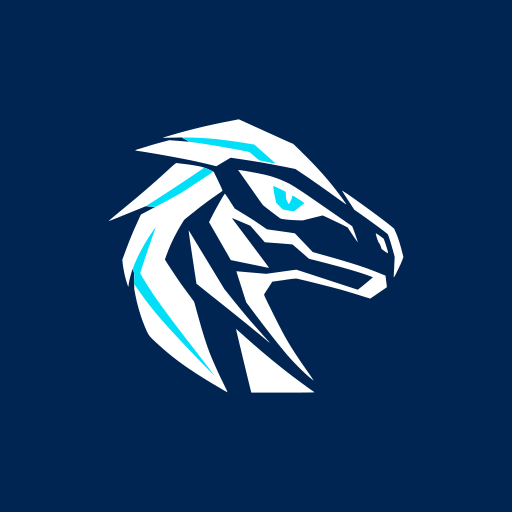